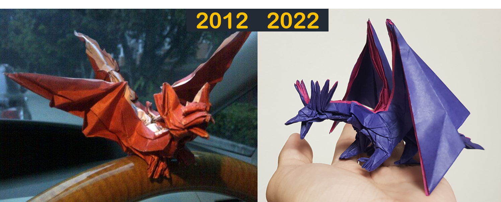
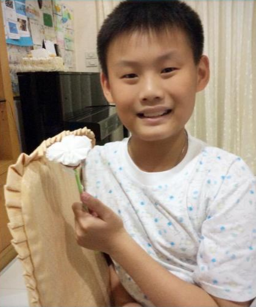
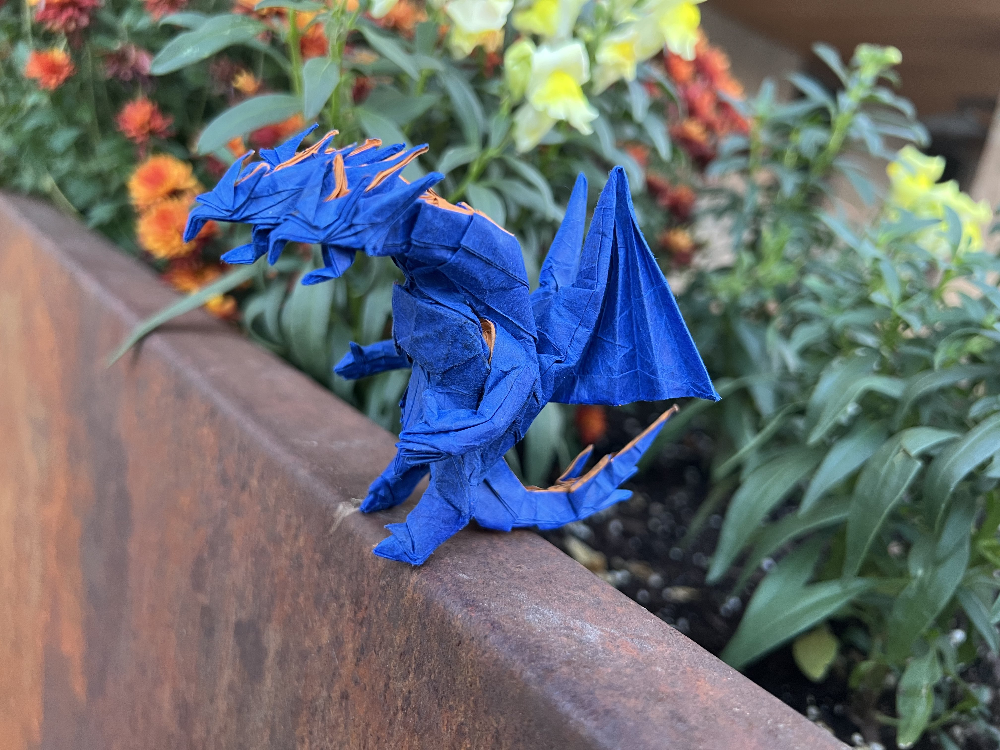

AKA. Kuroma the Origamist
Origami is the art of paper folding, originating from two Japanese words "ori" meaning "to fold" and "gami/kami" meaning "paper". Appearing as a branch of art, origami itself dives far more than following the traditions. From astonising representation models to stunning tesselations, origami sits comfortably as a midpoint of mathematics, engineering, and art.
However, amidst freedom in designs and presenations, origami always follow a rule of thumb: A model must be made from one (or more) uncut square (or rectangular) sheet of paper!
Origami was introduced to me as means of building my attention, as I can say I was an unstoppable force to adults back then. My first ever model is a crane (tsuru) hand-taught to me by my dad. Using origami for children books my parents bought, I started folding simple animal models that I think looks cool. Repeated folding slowly builds up into a hobby, which coincides with the time my parents bought me a computer.
With my newfound power, I began my search for cool origami on the internet. One subject in particular struck my interest - Dragons! My first ever "complex" origami comes in the form of Kade Chan's Fiery dragon (which, in fact, is still my go-to dragon to fold for show). I would often watch Tadashi Mori's YouTube channel for origami tutorials, and I especially liked his darkness dragon. Finally, my most proud accomplishment was my first fold of the origami master Satoshi Kamiya's Ancient dragon 1.0! A picture of that exact model is shown just right down here (as a memory before moving to Ancient dragon 2.0).
One thing I have been annually with origami happens on Mothers' day. The picture below is my first (in many) time of "folding" a paper flower for my mom on Mothers' day. (Smol KK is cute, ain't he.)
Since middle school, however, I stated my 5-year-long hiatus on origami as my life shifted more onto academics and math olympiad. It was until recently, that I revisited my childhood dream. I learned to design my own models, develop shaping techniques, and. The model down here is my latest one - the 3 headed divine dragon. Folding pre-design models is fun, but just how far can you go without designing one of your own!
Fun fact, "Kuroma (クロマ)" is my online persona build upon my other online (gaming) persona "ChromatimusX". The word is the Japanese pronunciation of "chroma", my online nickname. However, "kuro (クロ)" and "ma (マ)" mean "black" and "demon" in Japanese respectively, which is extremely fitting for my chuunibyou inner counscious to have fun in the online world!